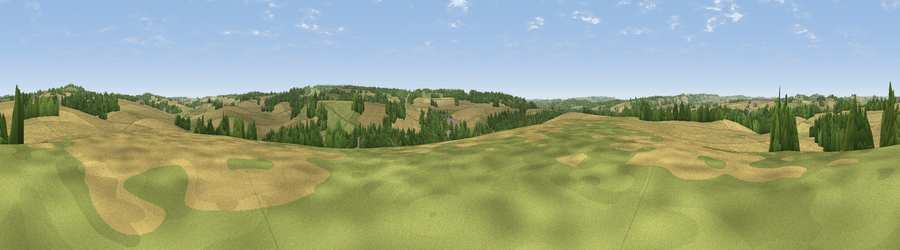

Watermans Field
#36622 in England · top 60% of its area beats it · near King's SomborneThe view, rendered

A 360° render of this exact spot computed from the terrain model, tree cover and land cover — summer colours, afternoon light, calibrated against photographs of famous viewpoints. Real trees, hedges and buildings will differ in detail.
The panorama
Grey silhouette: terrain skyline in each direction (720 bearings, Earth curvature and refraction included). Dashed green: skyline with trees (+15 m) and buildings (+8 m) as obstacles. Blue strip: how far the ground is visible on each bearing.
Where the view opens
Wedge length = distance to the farthest visible ground on that bearing (vegetation-aware). Rings at 10, 25 and 50 km.
What fills the view
65% cropland · 18% grassland · 17% woodland ·
Angular shares of the visible panorama (visual magnitude), not map area. Landscape diversity 0.40 (0–1 Shannon).
Key numbers
More beautiful places nearby
The staircase of upgrades: each row has a higher view potential than everything closer. Driving times are estimates from straight-line distance, calibrated against real road routing — check an actual route before setting out.
| Place | Direction | Drive | Score |
|---|---|---|---|
| Red Hill | SE · 2 km | ~4 min | 36.7 |
| Viewpoint near King's Somborne | SE · 3 km | ~8 min | 49.0 |
| Viewpoint near Stockbridge | NNE · 4 km | ~8 min | 64.3 |
| Viewpoint near Sparsholt | SE · 5 km | ~11 min | 66.9 |
| Viewpoint near Bulford | WNW · 20 km | ~34 min | 70.3 |
| Beacon Hill | ESE · 26 km | ~42 min | 71.7 |
| Beacon Hill | NNE · 27 km | ~43 min | 76.7 |
| Martinsell viewpoint | NNW · 37 km | ~55 min | 77.3 |
51.08461, -1.48563 · source: osm peak · position refined by local search. Computed location — check access rights before visiting.